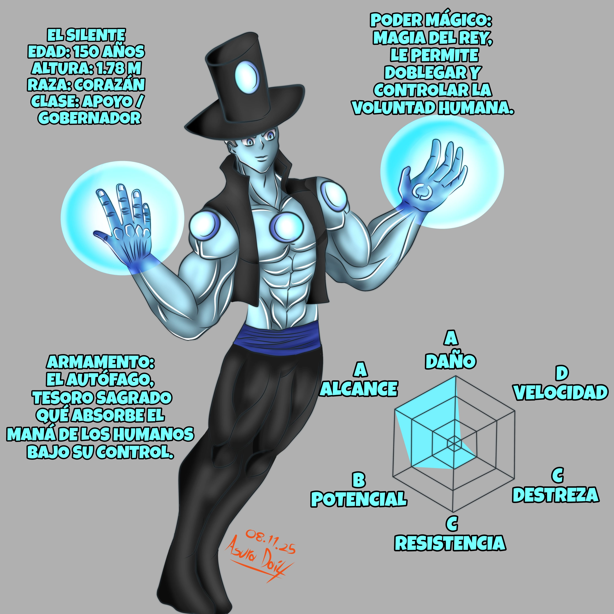
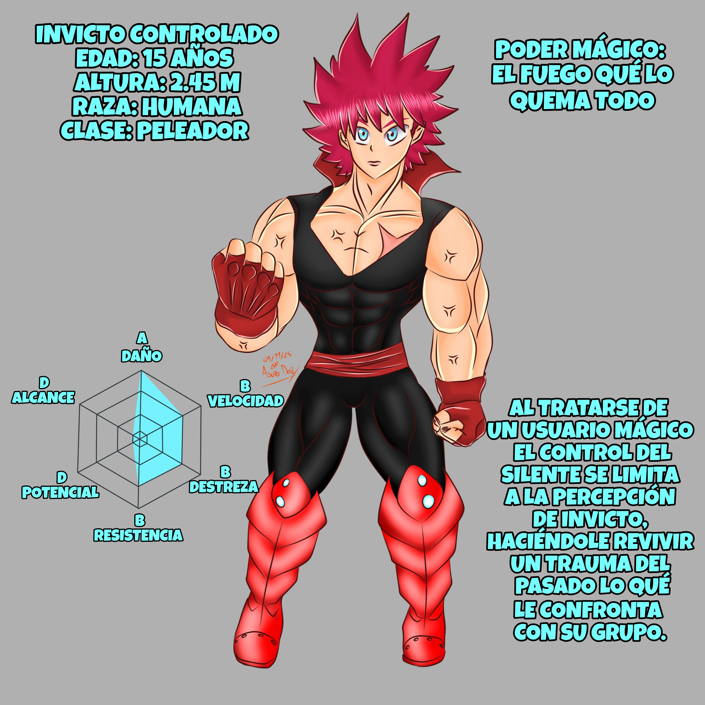

Perteneciente a la raza de los Corazán y gobernante
de una extensa colonia humana. Con ayuda de sus
poderes mágicos construyó una utopía sólo para él.
Pues los habitantes se ven doblegados a sus deseos.
Por más de 100 años pasaría desapercibido en el vasto
cosmos hasta qué el grupo de Diana Godoy logro captar
su interés al poseer entre sus filas al legendario
“Demonio de Zancart” el grupo de aventureros fue
teletransportado al reino del Silente quien mediante
engaños y tretas fingiría una crisis en la que solicitaba
su ayuda. Manteniéndolos en su colonia el tiempo suficiente
para indagar en la mente y memoria del imbatible Invicto.
Qué sin ningún daño sería controlado, el Silente revelaría la
farsa al resto del grupo con su objetivo cumplido pretenderia
eliminarlos. Dejando la interrogante al aire de ¿Quien podrá
este reto enfrentar?